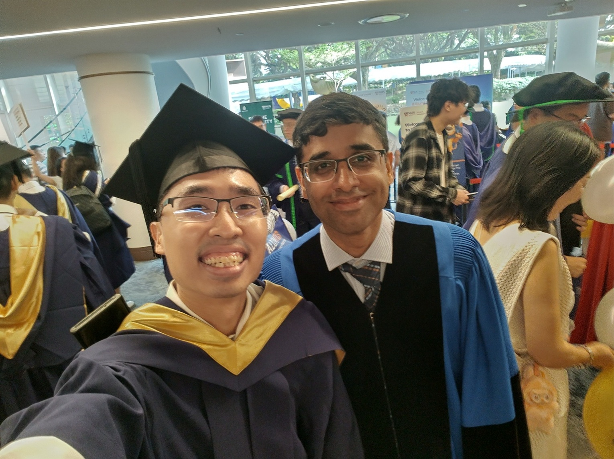

After 2.5 years of sweat, tears and lack of sleep, I’m a Master Graduate loh! I just graduated with a Master of Science degree in Computer Engineering from NUS College of Design and Engineering (CDE) Electrical and Computer Engineering (ECE) department.
Before I embarked on this master degree program, I actually did not know what the experience will be like as I did not know anyone taking up similar programs beforehand.
There is not much online information on the experience of graduate level programs from the CDE faculty and ECE department compared to the undergrad level. This is not surprising as relatively few Singaporeans take local graduate programs compared to undergrads in the first place. Of those that do, many anecdotally gravitate towards Masters in Business/Finance or CS/Tech related programs instead of core engineering.
Therefore now having completed this program, I decided to share my thoughts and structure this post in the way that would have helped someone like my younger self before I started.
These are the points covered in this blog post:
- Why I chose to take a Masters in ECE?
- Program structure of ECE-CEG Masters
- Reviews of courses that left me the greatest impression.
- Profile and working with other students
- General Feedback to professors to accommodate part-time students
- When or should a Singaporean take an NUS coursework engineering master degree?
- Conclusion
Why I chose to take a Masters in ECE?
My career field is in Embedded Systems with a leaning towards electronics design although I can handle myself well in the firmware and software aspects. A typical qualification of someone in this field is a degree in Electrical/Computer Engineering or a related core engineering field.
If you do not know already, my Bachelors degree is not from core engineering but in Computer Science from NUS School of Computing (SoC). An embedded systems career especially one with a hardware focus is almost unheard of for most CS graduates.
Getting my CS degree way back in 2015.
I sort of discovered my interest in hardware too late into my life to make a pivot away before I chose my CS education path. This Masters is now a second chance for me to correct this decade-long mistake.
The following points go through my thought process back in late 2022 when I first applied for this program.
Academic Insurance
As I would soon discover right at the start of my career, a major issue with embedded/hardware/electronics roles is their stricter requirement on relevant academic qualifications. A typical job description would state a requirement like “Bachelor/Master in Electrical or Computer Engineering or equivalent”.
In today’s era of inundated HR departments and recruiters often using automated Applicant Tracking Systems (ATS) to screen candidates’ resumes for relevant keywords, my CS degree will place me at severe disadvantage in such roles. My resume may be automatically screened out long before a human reviewer gets a chance to read my potentially-relevant job experience. With such roles already quite niche in the first place, I cannot afford further negative factors.
Contrast this to many Software Engineer (SWE) roles where there is relatively less strict focus on pure academic qualifications. It is not mandatory to have a CS degree in many cases as long as you can demonstrate you have the required skills in the interview.
I’m fortunate in my career so far to have my connections vouch for my capability, to have my resume sent directly to the hiring manager but I cannot always depend on this in the long run.
Although I’m in the civil service now with a reputation of job security/stability (aka iron rice bowl), I can never take this for granted. Should I be in a situation to have to look for a new job, at least now I have the relevant qualifications for this field. I still have decades more in my career span, better to stabilise my career foundation as early as possible when I still have the time and energy to take a part-time degree.
Credibility
An extension from the previous point is that I have noticed during job interviews and interactions with colleagues is the question on qualifications when it comes to discussing hardware issues.
Almost nobody asks for this in the software field as it tends to be more open to mid-career switchers and people from non-traditional academic backgrounds.
Without a core-engineering degree, it undermines my credibility in such discussions where no amount of side-projects or online courses can help to mitigate. This assumption has some basis as well which leads to the next point.
Knowledge gap in CS
A CS degree understandably does not go into deep fundamentals of electronics and other related topics compared to ECE majors. Throughout my career, I have supplemented this with many online and offline courses however a persistent issue with the nature of such adhoc courses is the depth. Unlike software with plenty of materials online, ECE topics are covered to far less detail outside of a formal academic institution.
“You don’t know what you don’t know” is the problem since I was never exposed to the academic aspect of the ECE degree to know what skills I lack to look for them.
I thought a more formal degree program would at least help me uncover any knowledge gaps I have. I can then close the gaps early in the safety of an academic program than to come up short in the interview/workplace with much higher stakes.
Possible career switch to chip design
I entertained the thought of possibly making a career switch into chip design. After speaking to some people in the field in the middle of my program, I realised I’m probably too late already to make such a major career switch now in my mid-30s.
A chip design career is something one probably should have started as a fresh-grad given the level of complexity and specialisation required of this field. If I have taken an ECE bachelor degree from the start, I might have perhaps started in that field in a semiconductor company. Doing such a switch now would likely entail a career-restart by taking up an entry-level position with a significant pay cut, that is assuming a company would want to take a risk on such an unusual hire over a fresh-grad.
Nevertheless, I chose to take some chip-design courses like VLSI for the extra knowledge. It’s a course that is almost impossible to pick up well outside of a university grad-level program which I will share more later in this post.
Embedded is already quite low on the tech stack, chip design is the field that is one step lower than embedded and it certainly gave me much better understanding of the datasheets of the chips I used in my line of work.
Possible second career in part/full-time teaching
I did consider a future later-career possibility in teaching or part-time instruction. In such cases, having a higher education qualification will give me a better chance in attaining such roles and/or negotiate a better package.
Why part-time?
Well I still need to feed myself and pay for the degree duh!
I’m in a point in my career where the opportunity costs of quitting my job or taking no-pay leave is not small. By staying in the workforce, I continue to accumulate job experience and skills even while learning on the side. So I have the best of both of worlds where the time I spend on the master degree will not come at the expense of practical job experience.
Another benefit of part-time is that you have more breathing room between courses. This allows more time to read up on missing prerequisite knowledge if you have any rather than being bogged down with a flood of incoming knowledge all at once from multiple courses.
Of course, the tradeoff for taking a part-time degree is far less personal free time and sleep.
My initial choice
My first choice wasn’t actually Computer Engineering. It was actually Electrical Engineering.
The reason I chose EE as my first choice is because I wanted a stronger hardware education. I was however rejected by the ECE department for EE and they gave me my second choice CEG instead.
But oh well, I take what I can get.
Program structure of ECE-CEG Masters
To graduate with an ECE masters by coursework, one would need to take 10 courses where at least 2 must be from the core basket and 2 relevant courses can be at the undergrad 4000 level.
For a part-time student like me, one can finish the program in no less than 2 years (4 semesters) or up to 4 years (8 semesters). A more comfortable pace in my view would be 2.5 years (5 semesters) where one would take 2 courses per semester.
This is the list of courses I completed:
- CEG5203: Hardware Acceleration and Reconfigurable Computing
- CEG5201: Hardware Technologies, Principles, & Platforms (core)
- CEG5101: Modern Computer Networking (core)
- CEG5103: Wireless and Sensor Networks for IoT
- CEG5202: Embedded Software Systems and Security
- EE4415: Integrated Digital Design
- CEG5104: Cellular Networks
- EE5518: VLSI Digital Circuit Design
- CEG5105: Cybersecurity for Computer Systems
- CEG5303: Intelligent Autonomous Robotic Systems
There is an option for a project course to replace one or more academic coursework courses but I did not take this up as I felt having a full-time job would mean difficulties in meeting with professors and stakeholders for the project during working hours. If one is a full-time student, a project course is an entirely reasonable option.
Classes are generally held from 6pm to 9pm on weekday evenings so part-time students can attend the classes after work. In my opinion though, 6pm is still pretty early and difficult for many working people to make it to the classes (depending on office location) in time unless they leave work much earlier. We haven’t even counted time for dinner. Thankfully most lectures are recorded and can be viewed later online.
Other than coursework, there is a subsidised research program option but I did not go for that as that is generally not suited to be done on a part-time basis.
I agreed to be featured in an interview by the ECE social media team. The video was even placed on the screen in front of the department office.
Reviews of courses that left me the greatest impression
Out of the 10 courses I took, I will share my thoughts on CEG5203, EE4415 and EE5518 as those courses left the greatest impression on me.
CEG5203: Hardware Acceleration and Reconfigurable Computing + Guest speaker
This was the very first course I took in my first semester and it would obviously set my first impressions of what the NUS ECE Masters program will be about. It was taught by a famous ECE Prof Rajesh Panicker.
This module goes through the low-level architecture and use of GPUs and FPGAs. A very classical type of content I would expect of a CEG course, the intersection between hardware and software.
Academic content can sometimes be very difficult and dry and it needs a special breed of instructor who can bring forward this content in a way that can be more easily absorbed by the students. Dr Rajesh explains the concepts in a way that is easy to grasp. His passion in teaching helps greatly as students can easily sense if the instructor is there because they like to teach or just because they have to fufill a requirement which will lead to students being switched off or just skip the lectures.
He listened to my feedback such as uploading lecture slides far ahead of time so I have sufficient time to go through them before the class. He has won numerous teaching awards over many years and I can fully understand why.
There are group projects involving a FPGA dev board and OpenCL GPU programming. Learning curve was steep for me as I had limited prior exposure to FPGAs and GPU programming as I never had a need to use those at work but that is a good thing. If things are easy, means you are not learning much.
I can safely say his great teaching gave me the confidence to continue on with the rest of the program.
Tangential to this course, Dr Rajesh invited me to speak at his EE2028 Microcontroller undergrad class on embedded systems.
I was glad to have the opportunity to share my past work experience to the undergrads in a way I wanted if I were in their position. Information on embedded systems hardware development especially in the Singapore context is difficult to find online. This also clearly shows his dedication to his students to arrange for external speakers to share industry knowledge and how classroom knowledge can be translated to actual products.
It was also an irony that the first time I have ever been inside an EE class is not as a student but as guest speaker.
EE4415: Integrated Digital Design
I took an undergrad level course EE4415: Integrated Digital Design as it is a graduate prerequisite advisory for the EE5518: VLSI module I eventually wanted to take. For undergrad students, EE4415 is a pre-requisite for EE5518 but this is optional for graduate students.
Nevertheless, I wanted to make sure my foundation was sound before taking a graduate-EE course. The major issue is that most undergrad courses are held in the day during working hours. To allow myself to attend these classes while keeping my job, I actually saved up a huge portion of my leave beforehand so I could burn it rapidly week after week to attend the classes throughout the semester.
This course was taught by both Prof Massimo Alioto and Prof Kelvin Fong. I have to say they taught well, explanations are very clear although I had to look up some electronics concepts that I was not previously exposed to. Perfectly understandable as I never had a formal EE background.
In CS, the lowest a Computer Architecture class will go down to are the logic gates. It was from this EE4415 class that I would learn how the gates are designed from the MOSFET level amongst many other interesting knowledge.
It was also the first time I used used Verilog in an academic assignment as Hardware Description Languages are not a part of the CS curriculum. I knew what I was getting into and prepared myself by taking a Verilog course on Udemy beforehand and working on FPGA projects on the side.
With no final exam in this module, the individual assignments involving several SPICE simulations and Verilog project are actually understandably heavy. There is also a closed-book mid-term test where you have to memorise some electronic timing equations to solve certain questions and another had you hand-write Verilog code with nothing more than a syntax reference card. That was painful but it does help to solidify knowledge in an era where over-dependence on AI is getting unhealthy.
In the end I got a good grade for this module which was a pleasant surprise so I guess this sacrifice was worth it in the end. The first EE module I have taken in my life.
EE5518: VLSI Digital Circuit Design
After taking EE4415, I took EE5518: VLSI Digital Circuit Design in the next semester conducted solely by Prof Massimo Alioto.
This course is intense, no other way to describe it. It really requires strong fundamentals in Physics and Electronics. I was glad I took EE4415 previously if not I will have been totally lost in this module with a significant chance of failure.
I can see the passion of Prof Massimo really shines through in this class as he goes into great detail into all his lectures and shares the results of experiments he did in his Green IC research group. Class attendance for this course is consistently 90+% week after week from the start to the end of Sem as students including myself are glued to his lectures.
I don’t think I will do a chip design job but the knowledge gained is one of a kind as it’s almost impossible to learn this well outside a university. There is a severe lack of online materials for this subject due to stuff like proprietary software and NDAs everyone must sign to use those software. So studying in this module is done the traditional way, with textbooks, lecture notes and software user manuals.
In group projects, I had to draw lots of circuits using cells from Process Design Kits to fufill a certain design goal then conduct plenty of timing simulations and calculations. I guess this is what a IC designer does very often?
This thick palm-sized book containing all the lecture slides was given out by Prof Massimo to the students of this module. It is the only material allowed as “cheat-sheet” for the final exams. After the exams, it can serve as a reference book for potential chip designers. Although I may not be a chip-designer, I will still keep this book for posterity!
Other thoughts
Profile and working with other students
I had the opportunity to work with many fellow students during my group assignments. Most of the students I noticed have this similar background:
- Full-time
- Foreigners of a particular nationality which I shall not name. It is entirely probable that some classes may have just a handful or even no Singapore citizens inside.
- Fresh from their undergrad with limited or no working experience
This makes the profile of someone like myself; locally-born Singapore citizen, part-time study with full time job, several years of working experience very rare in this program. I do notice that some students and professors react in surprise when I speak that there is a Singaporean here.
Being newly-minted young undergrads from a non-Singaporean education system, their undergrad academic skills still fresh in their heads, they are energetic, hungry and eager to learn.
An interesting dynamic is the significantly different maturity levels between myself and my classmates. With my additional years of work and life experience, I find myself more often than not taking up a more leadership, direction-setting and planning role during group projects where my younger classmates sometimes are more uncertain about things. Unlike full-time students, my non-work time is extremely limited and inflexible so I cannot afford to be not as judicious in my schedule planning compared to them.
There are also some full/part-time students I have worked with who also have some work experiences and it was interesting to learn more about each others’ work backgrounds. Contrast this to my undergrad days where everyone local or foreign is largely of a similar phase of life fresh from JC or Pre-Uni instititions. Singaporeans form the majority in the undergrad level compared to now where I’m in the rare minority.
Basically in this program, I thoroughly enjoyed working with a more diverse group of people compared to my undergrad days.
Atrophied Math skills
By the time I started the program in Jan 2023, I was already working for 7.5 years. Unless you are involved in academia or deep RnD duties, most roles in industry seldom require you to regularly utilise Math skills like Calculus and Statistics to a deep level.
I will readily admit my Math skills weren’t strong even during my undergrad days in the first place and my Math modules were the ones that pulled down my CAP. After 7.5 years in the workforce, my Math skills have atrophied quite badly. It reminds me of the time between A-levels and Bachelor degree when National Service resulted in many men losing touch with our academic skills.
Now in comes some courses where they assume your undergrad Math knowledge is still intact and build some concepts and proofs on top of them.
It was a significant issue for me initially where I had to brush up my Math if not I will be lost. So for people keen on taking graduate core engineering programs, a good advice will be to revise on Math before starting or just avoid courses with a heavy Math component where feasible.
General Feedback to professors to accommodate part-time students
Given that the large majority of students are full-time, it understandable that teaching staff miss out on the pain-points faced by the tiny minority of part-time students that full-time students do not. It can be helpful to remind Professors about this and see if workarounds can be accommodated.
-
For group projects, separate part-time and full-time students on best-effort basis due to hugely differing schedules. Full-time students take more evening classes leaving only day hours free. Part-time students have to work in the day thus are only available during the non-class evenings. Weekends are the only common time but that interval is often just too long. I have worked with full-time students in my projects so I sometimes have to take leave for meetings or we hold them at odd hours.
-
To open submission folders far ahead of time. As a part-time student, I try to submit my work as early as possible to mitigate the possibility of a work exigency suddenly eating up my time in the last minute making me forget/unable to submit.
-
Equipment collection such as hardware development boards from the labs are usually only available during work hours. This is problematic for obvious reasons. Wonder if feasible to somehow allow collection outside work hours or have the Profs distribute during the evening class itself?
-
Make-up classes may be conducted due to public holidays eating into the evening lecture slots. The full-time majority may be ok to hold them during weekday work hours. I understand scheduling constraints sometimes do not permit a viable alternative so to best-effort try to record this classes if work-hour slots are the only choice.
-
Reply quickly to clarifications. Unlike full-time students who can almost immediately get back to checking a Prof’s reply, part-time students can only do so probably in the next evening or longer given our work schedules. This ask-reply-test interval cycle becomes extended for part-time students while deadlines remain unchanged. I fully understand Professors are busy with their research and other teachings and sometimes take more time to reply. But I hope the teaching staff still do try to best-effort get back to the students ASAP.
When or should a Singaporean take an NUS coursework engineering master degree?
Let me be honest, an NUS coursework master degree is not cheap and I do not recommend it to everyone.
Depending on subsidies and your background, expect to shell out around S$35-40K as a Singapore citizen. To pay this much to take a masters may be difficult to justify for some. If the employer can subsidise this or if one can get a scholarship then of course it is a no brainer. However if one is paying this out of pocket, one will have to carefully measure the potential ROI whether it is worth it.
For me, based on the reasons and circumstances I shared earlier, the decision was clear. I personally paid fully in cash as I recognised the benefits it can bring to me even though the ROI made not be immediately felt in the short to mid term. I did apply for but got rejected from the SG Digital Scholarship (Postgraduate).
Another issue is the age or life stage. It is well-known that many Singaporeans graduate later than young people from other countries around the age of 23-25. This is due to factors like our education system and National Service. Taking a masters degree straight after undergrad will mean further delaying your entry into the workforce and not really understanding what the industry needs. On the other hand, waiting too long will mean higher opportunity costs, increased job demands, family commitments, atrophied academic skills and just lower energy levels in your 30s compared to 20s. I have heard of people dropping out of part-time master programs because they just cannot cope with it.
If you intend to take engineering masters, I think the sweet spot is after 2-4 years of work experience. Enough maturity and experience to know what the industry require and can appreciate the knowledge you study. Yet not too far out of school that you have lost touch with the academic fundamentals and still energetic enough to burn the midnight oil to go through all the assignments and prepare for exams.
Conclusion
This master degree program is a challenging journey for me and I’m glad to have successfully completed it. Taking an academic program after years out of university is not easy but definitely doable if one puts enough effort and sacrifice into it.
With my increased maturity, I can better appreciate the concepts the professors are imparting. I may have less raw energy in my 30s now compared to my 20s during my undergrad, but I can feel I can study and manage my time much better.
Taking a CS Bachelors was a mistake in hindsight considering my career path. I still managed to correct this 10 years later. A silver lining of this mistake is that if I had taken an ECE Bachelors in the first place, I may have a less compelling need to take this Masters today. Then I would have missed out on experiences and knowledge I have now.
I wished I had something like this post to read before I started on this program, at least now I hope the next person keen on NUS ECE Master can benefit.


{kind=link}
{kind=link}
{kind=link}
{kind=link}
{kind=link}
{kind=link}